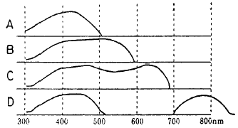
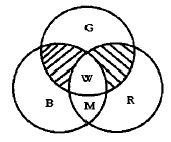
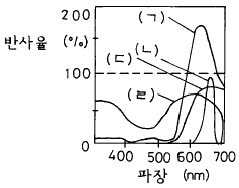
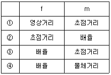
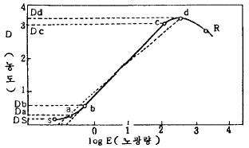

인쇄산업기사 (2002-08-11 기출문제)
1과목: 인쇄공학
1. 산업재해 통계에서 많이 사용하는 재해율이 아닌 것은?
- 강도율
- 년천인율
- 도수율
- 평균율
(정답률: 알수없음)

2. 인쇄잉크가 가지고 있는 성질과 관계가 없는 것은?
- 소성
- 탄성
- 유동성
- 친수성
(정답률: 알수없음)
3. 인쇄용지의 뜯김 현상을 측정하는 시험법은?
- 유흡수미터법
- 베크시험법
- 데니슨왁스법
- 열수축출법
(정답률: 알수없음)
4. 인쇄실의 환경이 작업 효율에 가장 적게 영향을 주는 요소는?
- 온,습도의 영향
- 공기의 청정
- 환경의 정리
- 작업의 평준화
(정답률: 알수없음)
5. 제책시 속장을 실로 꿰매는 방법은?
- 호부장
- 풀매기
- 중철
- 양장
(정답률: 알수없음)
6. 판의 화상 상태가 양호한데도 불구하고 인쇄 중에 점차로 화상 부분에 묻는 잉크의 농도가 엷어지는 현상은?
- 그리싱
- 워싱
- 스커밍
- 블라인딩
(정답률: 알수없음)
7. 재해를 예방하기 위한 안전작업에 관한 사항 중 옳지 않은 것은?
- 벨트의 이음부분에는 돌출된 고정구를 사용한다.
- 기계의 청소, 급유 등 수리작업시는 기계의 운전을 정지시키는 것이 좋다.
- 원심기계에는 덮개를 설치하여야 한다.
- 콘베이어에는 위험방지를 위해 급정지장치를 부착한다.
(정답률: 알수없음)
8. 잉크전이에 대한 설명 중 옳지 않은 것은?
- 잉크전이율은 인쇄속도에 반비례한다.
- 잉크전이율은 인쇄압력에 비례한다.
- 잉크전이율은 잉크점도에 반비례한다.
- 동일한 인쇄면을 얻는데 필요한 잉크 요구량은 많을수록 좋으며 경제적이다.
(정답률: 알수없음)
9. PS판 재질은 알루미늄(Al)으로 되어 있고 표면은 조면처리(모랫발) 되어 있다. 조면처리를 하는 계면화학적 이유는?
- 친수성 금속을 조면으로 만들면 물에 의한 젖음 현상이 감소한다.
- 친유성 금속인 알루미늄(Al)을 조면처리하면 물에 의한 젖음 현상이 증가한다.
- 친수성 금속을 조면처리 하면 물에 의한 젖음 현상이 증가한다.
- 조면 처리와 물에 의한 젖음 현상과는 관계가 없다.
(정답률: 알수없음)
10. 산성이 강한 축임물을 사용할 경우 일어나는 문제점과 가장 거리가 먼 것은?
- 아라비아 고무와 강산용액이 반응하여 염을 생성한다
- 비화선부의 때낌이 제거된다.
- 친수성 부분이 친유성으로 될 수 있다.
- 축임물 중 아라비아 고무의 농도를 증가 시킨다.
(정답률: 알수없음)
11. 가늠불량(misregister)의 원인을 설명한 것 중 틀린 것은?
- 종이의 가로결과 세로결의 차이가 없기 때문이다.
- 과량의 축임물 공급으로 종이가 신장되었다.
- 인쇄실의 습도가 맞지 않다.
- 택이 높고 화선부가 많으면 발생하기 쉽다.
(정답률: 알수없음)
12. 일반적인 인쇄물의 광택에 대한 설명 중 거리가 먼 것은?
- 종이가 평활할수록 광택이 높다.
- 잉크피막이 두꺼울수록 광택이 증가한다.
- 스프레이파우더를 많이 뿌리면 광택이 저하한다.
- 잉크 중 안료의 함량이 높으면 광택이 증가한다.
(정답률: 알수없음)
13. 블랭킷의 인쇄적성에 관한 설명 중 틀린 것은?
- 압축성이 큰 블랭킷이 망점퍼짐이 많다.
- 압축성블랭킷이 원주변화가 적다.
- 패킹재의 종류에 따라 망점모양이 변화한다.
- 인쇄압력은 닙폭(mm) 또는 선압력(kgf/cm)으로 나타낼 수도 있다.
(정답률: 알수없음)
14. 매엽오프셋인쇄기 급지불량의 주된 원인은?
- 종이의 평활도
- 정전기 발생
- 종이표면의 거칠음도
- 종이의 표면에너지
(정답률: 알수없음)
15. 평판인쇄에서 습수와 잉크간의 유화(Emulsification)에 대한 설명 중 옳지 않은 것은?
- 습수와 잉크 사이에서 유화가 일어나서는 절대 안된다.
- 잉크의 유화가 너무 적으면 잉크의 전이가 나빠진다.
- 잉크의 유화가 지나치면 인쇄 더러움의 원인이 되기도 한다.
- 잉크의 유화가 많아지면 건조가 늦어진다.
(정답률: 알수없음)
16. 바탕색을 먼저 인쇄한 후 시간이 경과하면 잉크 피막이 완전히 건조되어 다음 색을 인쇄하면 잉크가 잘 오르지 않는 현상은?
- 결정화(Crystallization)
- 덧쌓임(Piling)
- 응집(Flocculation)
- 소름얼룩(Mottling)
(정답률: 알수없음)
17. 오프셋 매엽 인쇄기에서 발생되는 뒷묻음(set off)을 개선하기 위한 조치로서 적절치 못한 것은?
- 블랭킷과 압통간의 압력을 높인다.
- 상대습도를 더 낮게 만든다.
- 피더판 위의 용지에서 정전기를 제거한다.
- 배지 적재대의 용지량을 줄여서 쌓는다.
(정답률: 알수없음)
18. 단조로움의 극복이나 해결을 위한 방책으로서 현장 근로자들을 위한 대책은?
- 개인이 담당하는 직무의 양을 많이주고 단순화 한다.
- 개인이 담당하는 직무의 양을 가능한한 많이 준다.
- 개인이 담당하는 직무의 내용을 가능한한 고도화한다.
- 개인이 담당하는 직무를 단순화 한다.
(정답률: 알수없음)
19. 액체가 고체를 완전히 축이는 경우 액체는 같은 모양으로 퍼진다. 이때의 접촉각은?
- 0°
- 45°
- 90°
- 180°
(정답률: 알수없음)
20. 습수가 평판을 적시는 것과 같은 젖음 현상은?
- 확장젖음
- 침적젖음
- 침투젖음
- 부착젖음
(정답률: 알수없음)
2과목: 인쇄재료학
21. 무기안료가 유기안료에 비해 단점은?
- 색상의 선명도
- 내광성
- 내용제성
- 내열성
(정답률: 알수없음)
22. 실용 가능한 Halogen화합물의 감광재료 중 가장 고감도인 것은?
- AgCl
- AgI
- AgF
- AgBr
(정답률: 알수없음)
23. 인쇄잉크의 용도에 따른 적성이라고 볼 수 없는 것은?
- 인쇄기상에서 완전한 기능을 나타낼 것
- 인쇄물 요구에 적당할 것
- 인쇄물이 용도에 따르는 내성을 갖출 것
- 산화중합 건조를 할 것
(정답률: 알수없음)
24. 다음 중 기계 펄프는?
- 리파이너 쇄목 펄프
- 크라프트 펄프
- 아황산 펄프
- 소다 펄프
(정답률: 알수없음)
25. 아마인유와 같은 건성유를 비히클로 한 것으로 공기 중의 산소를 흡수하여 건조하는 형식은?
- 산화중합건조
- 침투건조
- 증발건조
- UV 건조
(정답률: 알수없음)
26. 다음은 감광재료의 감광성을 나타낸 그래프이다. 올소크로매틱 필름의 감광성을 나타낸 그림은?

- A
- B
- C
- D
(정답률: 알수없음)
27. 초지기 위에서 편면 10g/m2 정도로 도포, 가공한 고급용지로서 원지는 중질지와 상질지를 사용하며, 잡지, 서적, 카탈로그 등의 컬러 인쇄 용지로 사용되는 것은?
- MC지
- 캐스트 코팅지
- 버라이터지
- 증권 용지
(정답률: 알수없음)
28. 잠상을 장시간 방치하여 두면 감광핵에 모인 은입자가 원래의 은이온 상태로 되돌아 가려는 현상이 발생한다. 노출된 필름을 보관시 어떻게 하면 잠상퇴행 현상을 방지할 수 있는가?
- 온도, 습도가 높은 곳에 보관한다.
- 온도는 높고 습도는 낮은 곳에 보관한다.
- 온도는 낮고 습도는 높은 곳에 보관한다.
- 온도, 습도가 낮은 곳에 보관한다.
(정답률: 알수없음)
29. 판면의 비화선부의 불감지화와 보수성을 주기 위한 처리공정을 무엇이라 하는가?
- etch액 처리
- 뒤묻음 방지처리
- 대전방지 처리
- 연마
(정답률: 알수없음)
30. 인쇄용지 중에서 합성지에 대한 장점 중 틀린 것은?
- 강도가 크며 내수성이므로 옥외 인쇄물에 적합하다.
- 석유계통의 플라스틱 재료보다 목재 펄프 재료가 풍부하다.
- 습도에 따른 치수 안정성이 좋다.
- 종이와 같은 지분, 먼지가 없다.
(정답률: 알수없음)
31. 화폐나 접는 인쇄물 등을 접었다. 펼 수 있는 횟수를 측정하는 것과 관계있는 것은?
- 내절강도
- 인열강도
- 파열강도
- 인장강도
(정답률: 알수없음)
32. 에치액의 역할이 아닌 것은?
- 불감지화 작용
- 아라비아 고무액의 아라빈산을 금속면에 접착하는 것을 도운다.
- 인산은 금속물의 불순물을 용해시킨다.
- PS판용 산성 현상액을 알칼리화 시킨다.
(정답률: 알수없음)
33. 제판용 필름으로 빨간색광에는 감광되지 않는 필름의 종류는?
- 팬크로매틱
- 레귤러
- UV센시티브
- 올소크로매틱
(정답률: 알수없음)
34. 고무블랭킷에 많이 사용하는 고무는?
- 이소프렌
- 니트릴고무
- 부틸고무
- 에틸렌프로필렌고무
(정답률: 알수없음)
35. 계면활성제에 관한 설명 중 옳지 않은 것은?
- 분산제와 침투제:고체 안료나 분말 등에 액체가 고루 잘 묻도록 하거나 모세관으로 액체가 잘 침투되어 섞이게 하는 약품
- 유화제 또는 유화 파괴제: 고체들의 틈새에서 기름층을 만들어 윤활이 잘 되게 하거나 반대로 이 층을 파괴하여 미끄러지지 않게 하는 약품
- 기포제 또는 소포제: 일부러 거품이 많이 나오도록 하거나 반대로 거품을 없애기 위해서 첨가하는 약품
- 광택제 또는 소광택제: 표면에 광택이 나도록 균일한 기름층을 만들어 주거나 또는 반대로 난반사가 되도록 표면을 만들어 주는 경우에 사용하는 약품
(정답률: 알수없음)
36. 알루미늄 인쇄판 중에서 양극산화처리(Anodization)를 했다는 것은 무엇을 뜻하는가?
- 감광막을 산화처리
- 알루미늄 표면을 산화피막으로
- 알루미늄판을 부식처리하여 폐기
- 감광막을 알루미늄 양면에 도포
(정답률: 알수없음)
37. 잉크의 구성물에 속하지 않는 것은?
- 안료
- 비히클
- 진료
- 보조제
(정답률: 알수없음)
38. 알루미늄판을 부식시키지 않는 것은?
- 염산
- 질산
- 황산
- 인산
(정답률: 알수없음)
39. 스크린 감광액의 선택시 고려해야 할 요인과 관계가 가장 적은 것은?
- 경화된 피막이 견고할 것
- 스크린사와의 접착성이 좋을 것
- 유동성이 좋을 것
- 주위 환경에 대한 변화가 적을 것
(정답률: 알수없음)
40. 염료의 용액에 체질을 넣고 침전제를 첨가, 혼합하여 물에 녹지 않는 성질로 만든 착색료는?
- 레이크 안료
- 아조 안료
- 프탈로시아닌 안료
- 스티렌계 안료
(정답률: 알수없음)
3과목: 인쇄색채학
41. 오스트발트 색채기호에서 17lc는?
- 17-색상, l-흑색량, c-백색량
- 17-색상, l-백색량, c-흑색량
- 17-백색량, l-흑색량, c-색상
- 17-흑색량, l-백색량, c-백색량
(정답률: 알수없음)
42. 색상환에서 반대위치에 있는 빨강색과 청녹색을 나란히 놓았더니 채도가 높아 보였다. 이러한 대비 현상은?
- 명도대비
- 색상대비
- 보색대비
- 계시대비
(정답률: 알수없음)
43. 분광반사율이나 투과율이 달라도 일정 조명광 아래에서 같은 색으로 보이게 되는 현상은?
- 색지각
- 컬러밸런스
- 분광감도
- 메타메리즘
(정답률: 알수없음)
44. 색채를 우리들의 감각에 따르는 색상,명도,채도에 기초하여 적절한 체계를 갖추어 표색하는 방법을 고안한 표색체계는?
- Munsell표색체계
- Ostwald표색체계
- CIE표색체계
- GATF표색체계
(정답률: 알수없음)
45. 색채조화의 원리가 아닌 것은?
- 비모호성의 원리
- 동류의 원리
- 대비의 원리
- 무질서의 원리
(정답률: 알수없음)
46. 안료나 염료와 같이 색을 형성하는데 사용하는 재료를 색료라고 하는데 안료나 염료에 따라서 입사광에 대한 파장별 반사율이 달라지는 현상을 무엇이라고 하는가?
- 표면반사율
- 분광반사율
- 선택흡수율
- 분광흡수율
(정답률: 알수없음)
47. 분광비 반사율은?
- 표준광원의 단색광이 표준백색면에서 반사되는 양과 그 단색광이 시료물체에서 반사되는 양과의 비
- 표준광원의 단색광이 표준백색면에서 투과되는 양과 그 단색광이 시료물체에서 반사되는 양과의 비
- 표준광원의 단색광이 표준백색면에서 흡수되는 양과 그 단색광이 시료물체에서 반사되는 양과의 비
- 표준광원의 단색광이 표준백색면에서 흡수되는 양과 그 단색광이 시료물체에서 투과되는 양과의 비
(정답률: 알수없음)
48. 먼셀의 색입체체계에 의해 명도단계가 8이고 채도가 12인 노랑색을 표기할 때 바른 것은?
- Y 8-12
- 8/12 Y
- 8 Y/12
- Y 8/12
(정답률: 알수없음)
49. 다음 중 물체 표면색의 같은 명도의 무채색으로부터의 차이에 관한 시감각 속성을 척도화 한 것은?
- 색상
- 명도
- 채도
- 색입체
(정답률: 알수없음)
50. 인쇄물을 제작하기 위해서 컬러 원고 이미지로 부터 red, green, blue의 각기 해당 필터를 사용해서 색분해 작업을 실시하는데 red필터를 투과해서 제작되는 분해 네거티브 필름의 색판으로서 적합한 것은?
- yellow
- red
- magenta
- cyan
(정답률: 알수없음)
51. 원색잉크 중 분광반사율이 가장 좋은 것은?
- 노랑 잉크
- 빨강 잉크
- 파랑 잉크
- 검정 잉크
(정답률: 알수없음)
52. 가법 혼색을 기초로 해서 R,G,B 및 C,M,Y 컬러의 혼색에서 그림에 나타내는 표시 부분 중 빗금친 부분에 해당하는 색상은?

- C, Y
- C, M
- Y, M
- Y, Bk
(정답률: 알수없음)
53. 푸르킨예(Purkinje) 현상으로 맞는 것은?
- 낮에 본 빨간 사과가 밤이 되면 밝게 보인다.
- 어두운 곳에서의 명시도를 높이기 위해서는 노랑이 유리하다.
- 저녁이 가까워질수록 초목의 잎이 선명하게 느껴진다.
- 밤에는 파장이 짧은 색이 먼저 사라지고 파장이 긴 색이 나중에 사라진다.
(정답률: 알수없음)
54. 일정한 물체에 빛이 입사 했을 때 일어나는 변화에 해당되지 않는 것은?
- 표면 반사
- 선택 흡수
- 산란
- 표면 분리
(정답률: 알수없음)
55. 감법혼색의 특징이 아닌 것은?
- 혼합하면 혼합할수록 명도가 높아진다.
- 혼합하면 혼합할수록 채도가 저하한다.
- 보색끼리의 혼합은 검정색에 가까워진다.
- 색상환에서 근거리 혼합은 중간색이 나타난다.
(정답률: 알수없음)
56. 원색의 조건이 아닌 것은?
- 혼합하여 어떤 색이라도 만들 수 없다.
- 그 색을 다른 색으로 더 이상 분해할 수 없다.
- 색광혼합에서 다른 색광의 혼합에 의하여 만들 수 없다.
- 3색광 또는 3색료를 전부 혼합하면 백색 또는 흑색이 된다.
(정답률: 알수없음)
57. 다음 색상중에서 단일 색상은?
- 흰색
- 회색
- 파랑
- 검정
(정답률: 알수없음)
58. 우리 눈에서 광량을 조절하는 것은?
- 맥락막
- 수정체
- 글라스체
- 홍채
(정답률: 알수없음)
59. 다음은 여러가지 색료의 분광 반사율을 나타낸 것이다. 형광적 특성을 가진 것은?

- (ㄱ)
- (ㄴ)
- (ㄷ)
- (ㄹ)
(정답률: 알수없음)
60. XYZ에 의한 색의 표시방법에 대한 설명과 관계가 먼 것은?
- Z는 440nm와 600nm부근에서 최대 자극치를 갖는 적색을 말한다.
- Y는 550nm부근에서 시감도 곡선과 일치하는 녹색을 말한다.
- 이값은 항상 X+Y+Z=0로 표시된다.
- 광원,물체,안구의 3대 요소가 느끼는 것을 말한다.
(정답률: 알수없음)
4과목: 사진제판공학
61. 스크린 제판에서 현상 후 판에 구멍이 나는 문제의 원인을 설명한 것 중 옳지 않은 것은?
- 빛쬠량이 너무 짧다.
- 과도하게 건조되었다.
- 유제 도포가 얇다.
- 감광유제가 부패되었다.
(정답률: 알수없음)
62. 망점 발생장치가 있는 스캐너에 사용하는 망점발생기 필름의 노출 광원은?
- He-Ne 레이저
- Ar 레이저
- Xenon lamp
- 발광다이오드(LED)
(정답률: 알수없음)
63. 카메라 렌즈의 초점거리 f와 유효구경 D와의 비를 무엇이라 하는가?
- 결상
- F번호
- 배율
- 수차
(정답률: 알수없음)
64. 편광 필터의 주된 용도는?
- 반사광을 제거하는데 사용
- 일정 파장을 반사 및 흡수시키는데 사용
- 일정 파장을 강조하는데 사용
- 마스킹에서의 색보정용
(정답률: 알수없음)
65. Total scanner의 기능 중에서 연속계조의 사진 원고가 가지고 있는 풍부한 톤을 단순화하여 화상을 몇개의 계조 또는 색채로 쪼개어 재현하는 효과는?
- 에어브러쉬 효과
- 도트에칭 효과
- 포스타리제이션 효과
- 빅토리얼 효과
(정답률: 알수없음)
66. 다음 중 평판제판에 해당되지 않는 것은?
- 와이프온판(Wipe-on Plate)
- 확산전사법
- 메탈 스크린법
- 젤라틴 태닝법
(정답률: 알수없음)
67. 교정인쇄기의 블랭킷(Blanket)이 갖추어야 할 조건중에서 중요도가 가장 적은 것은?
- 내마모성
- 내유성
- 내용제성
- 잉크전이성
(정답률: 알수없음)
68. 화상의 어두운 곳과 밝은 곳의 인접한 부분의 콘트라스트를 강조해서 그 부분의 경계 효과를 증가시키는 방법은?
- 밑색제거(U.C.R)
- 언샤프 마스크(U.S.M)
- 모아레
- 색보정
(정답률: 알수없음)
69. 전자사진의 방식 중 Selenium 감광판을 사용하고 일반용지에 전사하여 최종 화상을 얻는 것으로 감광판의 반복 사용이 가능한 방식은?
- XEROGRAPHY 방식
- ELECTROFAX 방식
- PIP 방식
- 정전잠상전사 방식
(정답률: 알수없음)
70. 크세논 램프에 관한 설명 중 틀린 것은?
- 색온도는 6000K 이다.
- 전압의 차이에도 광질은 변하지 않는다.
- 촬영용, 분해용 등에 적합하다.
- 냉각장치를 부착하지 않아도 된다.
(정답률: 알수없음)
71. 평면 주사방식의 input scanner와 디지털 카메라에서 사용되는 CCD(Charge Cuppled Device)센서는 특정의 물질에 광을 투사하면 전자가 튀어나오는 성질을 이용하고 있는데 이러한 성질을 무엇이라고 하는가?
- image센서효과
- line센서효과
- 광전효과
- 방전효과
(정답률: 알수없음)
72. 다음은 제판용 광원에 대한 설명이다. 맞지 않는 것은?
- 크세논등 : 파장에 따른 상대에너지의 변동이 작고, 매연가스가 나오지 않는다.
- 초고압수은등 : PS판 빛쬠에 많이 사용되며, 광원의 점등시에는 순시점등이 가능하며, 공냉식과 수냉식이 사용된다.
- 메탈할라이드등 : 고압수은등에 금속할로겐화 물질을 봉입하여 분광에너지 분포를 변화시킨 자외선이 풍부한 광원이다.
- 아크 방전을 이용한 광원으로는 탄소 아크등, 크세논등, 네온관등, 할로겐등이 있다.
(정답률: 알수없음)
73. 평판 제판에서의 연마의 목적과 관계가 먼 것은?
- 판의 비화선부에 보수성을 주어 친수성 유지
- 판면의 표면적을 증가시켜 인쇄 중 미끄럼 방지
- 전번 인쇄된 내용을 갈아내고 새로운 금속면을 낸다.
- 판면의 지방분을 확산시킨다.
(정답률: 알수없음)
74. 피사체거리(a) = f{(1/m)+1}에서 f와 m의 설명으로 맞는 것은?

- ①
- ②
- ③
- ④
(정답률: 알수없음)
75. 65선의 평방으로된 바탕에 200선의 10단계 망점 농담을 0∼9의 숫자모양으로 넣은 방식의 시각 평가용 관리스트립은?
- 도트게인스케일
- 슬러게이지
- 스타타깃
- 시그널스트립
(정답률: 알수없음)
76. 필터의 케이스에 CC20Y란 것이 기입되어 있다. 20의 의미는?
- 투과도
- 반사도
- 농도
- 색온도
(정답률: 알수없음)
77. 화상의 재현력에는 한계가 있는데 어느 정도의 미세한 상까지 재현할 수 있는가를 나타낸 것은?
- 입상성
- 콘트라스트
- 해상력
- 감색도
(정답률: 알수없음)
78. 전자 출판의 편집과정에서 사진 이미지의 해상도를 높일 때 주변의 픽셀 정보에 기초하여 새로운 픽셀을 만드는 작업은?
- 명암압축
- 색재현
- 보간
- 대비조절
(정답률: 알수없음)
79. 다음 특성곡선 중 적정 노출부는?

- s - a
- b - c
- c - d
- d - R
(정답률: 알수없음)
80. 평판 감광제의 광중합 반응에서 연쇄중합 반응이 아닌 것은?
- radical 연쇄중합
- cation 연쇄중합
- anion 연쇄중합
- ion부가 연쇄중합
(정답률: 알수없음)